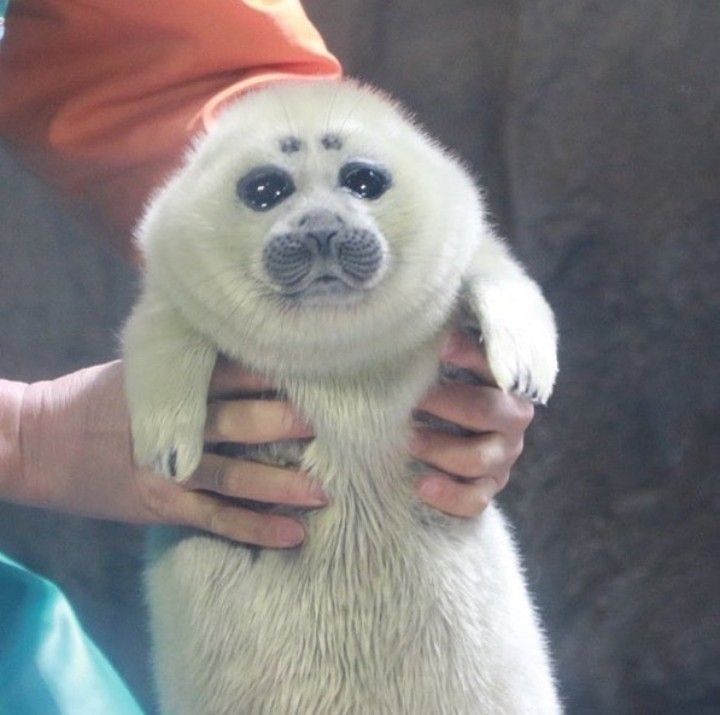
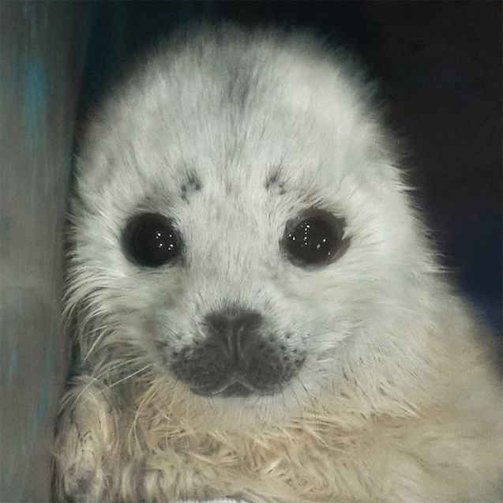
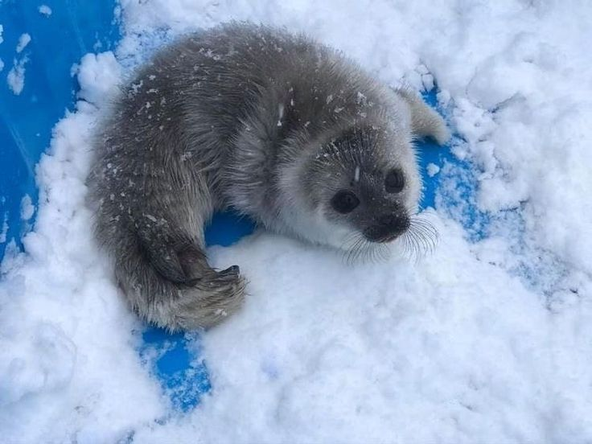

Что такое тюлени?
Тюлени - это морские млекопитающие, обитающие в холодных водах по всему миру. Они относятся к семейству ушастых и бесушных тюленей.
Виды тюленей
| Вид | Область обитания | Примечания |
|---|---|---|
| Тюлень-крабоед | Антарктика | Часто встречается на краю льдов. |
| Морской лев | Тихий океан | Обладает выдающимися плавательными способностями. |
| Ларга | Тихий океан | Имеет густую шерсть, которая помогает удерживать тепло. |
Фотогалерея


